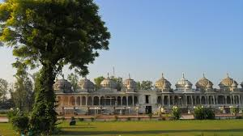
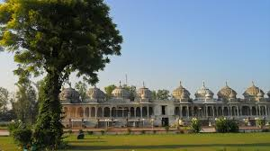

Ramniwas Dham
 

Ramniwas Dham
The city has famous Ramdwara of Ramsnehi Sampraday. The founder Guru of the sampraday was Swami Ramcharanji Maharaj, who preached his followers here later, he moved to Shahpura, 50 km from Bhilwara, where the present headquarters of Ram Snehi Sampraday known as Ram Niwas Dham is located.
Shahpura is situated at a distance of 55 km on Jahajpur Devli Road. Shahpura is famous for the contribution made by the Barhat family the freedom struggle of India and as the prime center of International Ramsnehi Sampraday. Shahpura is also famous for its 700 year old Far Painting. The painters of this region have won several national prizes.
Shahpura is a place of pilgrimage for the followers of the ' RAM SANEHIS' Sect .Founded by the hindus in 1804 .They have a shrine in the town as 'RAM DWARA' .The chief priest of RAM DWARA is the head of the sect. Pilgrims from all over the world visit the shrine through out the year . Ram Snehi is an Internation hindu sect. An annual fair ,which is called 'PHOOL DOL KA MELA' is held here on PHALGUN SHUKLA '15( march-april) for five days. About one lac people attend the fair. It is also famous for PHAD painitings
Contact Us :
Ask us anything! We’re here to answer any questions you have.
Email: shalinijoshi1996@gmail.com
Follow Us :